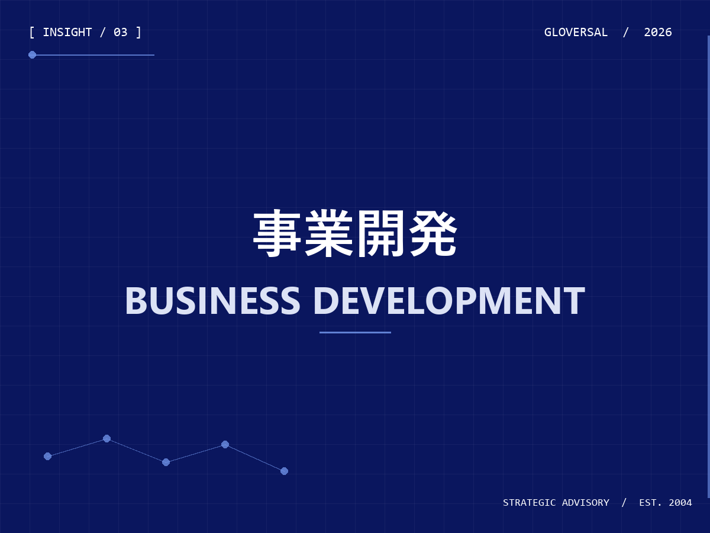

医療AIは
「精度」だけでは導入されない
導入現場で起きる“精度と運用のズレ”を整理し、PoCを本番運用に橋渡しするためのチェックポイントを解説します。
医療 AI、遠隔医療、ヘルステックの日本展開、医療機関とスタートアップの協業など、現場と事業のあいだで生まれる気づきを整理して公開しています。
導入現場で起きる“精度と運用のズレ”を整理し、PoCを本番運用に橋渡しするためのチェックポイントを解説します。
価格設計、商習慣、医療機関との関係性、制度理解、現場運用。海外発サービスが日本で詰まりやすい5つの論点を整理。

PoCを事業化に進めるには、検討主体、評価指標、現場合意形成の3点を初期から設計する必要があります。
読影フロー、医療機関側の導入責任、保険・費用構造、画像データ連携の4つの軸で事業仮説を組むアプローチ。
要件定義で見落とされやすい臨床ワークフロー・業務フロー・制度前提を、翻訳者として埋めるための視点。
意思決定の主体、成果物の責任、関係者合意の順序。協業初期で最も躓きやすい論点を整理します。